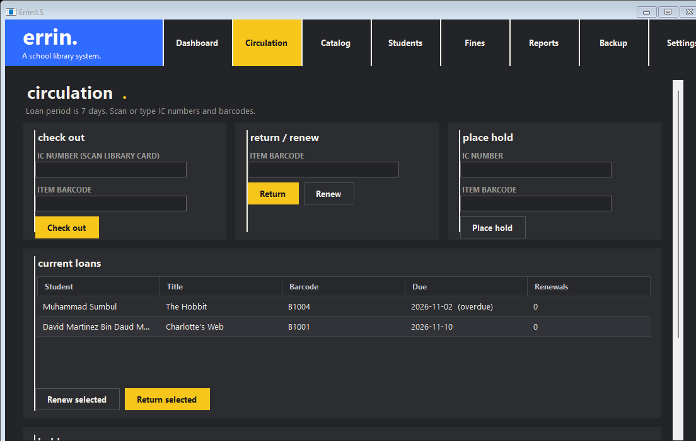

Simple, lightweight library software built for schools.
ErrinILS is a standalone library management system designed for everyday school computers. Fast barcode circulation, automated ISBN cataloguing, web OPAC with GitHub Pages static export, and student self-checkout—with zero dependencies and no server setup.

Built for the everyday reality of school libraries
Enterprise library platforms like Koha or SLiMS require dedicated Linux servers, MySQL administration, and constant IT upkeep. ErrinILS was designed to be double-clicked on any classroom PC and work immediately.
Fast Barcode Circulation
Works with standard USB barcode scanners. Scan student IDs and book labels with instant visual feedback, automatic return dates, loan limit enforcement, and hold alerts.
Automated ISBN Cataloguing
Add books without tedious typing. Enter or scan an ISBN to automatically pull title, author, publisher, and Dewey Decimal classification from Library of Congress (Z39.50) and Open Library.
Simplified View
Streamlined simplified circulation for primary and secondary students. Oversized touch buttons, clear status banners, and simple prompts allow students to check out and return books independently.
100% Offline & Zero Setup
No database servers, IIS, Apache, or background services. All records reside in a fast, robust SQLite
database (errin-data.db). Built-in 1-click backups and automatic migration ensure your data is always safe.
Malaysian School Localization
Native validation for Malaysian IC and MyKid numbers (YYMMDD-PB-###G) with birth date checks.
Fine calculation configured in Ringgit Malaysia (RM 0.10/day) and Nilam reports.
Mobile Audits via QR Code
Teachers and student assistants can scan a temporary QR code with a smartphone camera to perform stock audits and borrow books wirelessly over the school Wi-Fi without cables.
Online Public Catalog (OPAC)
Built-in web OPAC at /opac matching the desktop dark theme. Enables students and teachers to search by title, author, and dedicated Subject Headings with optional self-service patron login.
1-Click Static Export (GitHub Pages)
Export the complete OPAC bundle with 100% in-browser search to host for free on GitHub Pages. Give your school community 24/7 web catalog access without keeping a server computer running.
How ErrinILS compares to other solutions
How ErrinILS addresses the specific constraints of primary and secondary school libraries:
| Feature / Metric | ErrinILS | Koha ILS | SLiMS (Senayan) | Excel / Sheets |
|---|---|---|---|---|
| Installation | Single EXE or NSIS installer | Complex Linux server & Perl | Requires Apache & MySQL stack | Spreadsheet file only |
| Hardware Required | 1 GB RAM, 10 MB Disk | 4–8 GB RAM, Dedicated Server | 2–4 GB RAM, Web Server | Standard PC |
| Dependencies | 0 (Pure .NET 4.0 Framework) | Hundreds (Perl, CPAN, MariaDB) | PHP, MySQL, Apache/Nginx | Office suite |
| ISBN Book Lookup | Built-in 5-source automated lookup | Z39.50 (requires server setup) | P2P service or plugins | Manual entry |
| Simplified View | Built-in simplified touch mode | Third-party module | Self-checkout module | None |
| Malaysian IC / MyKid | Native regex & calendar verification | Custom regex required | Custom regex required | Formula required |
| Web OPAC & Online Catalog | Built-in local OPAC (/opac) & 1-click GitHub Pages export |
Web OPAC (requires Apache & Perl server) | PHP/MySQL web server required | None |
| Subject Heading (Perkara) Search | Dedicated subject filters, topic clouds & A-Z sorting | MARC 650 subject indexing | Subject heading tags | Manual filter only |
| Patron Self-Service Login | Optional Student ID / IC login for loans & holds (off by default) | Yes (requires LDAP or server accounts) | Member area with database login | None |
| Database Backup | Copy 1 SQLite file or 1-click backup | mysqldump & Zebra index export | MySQL database export | Save file copy |